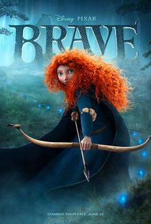
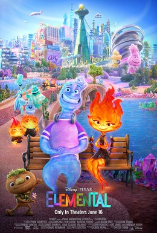

_poster.jpg)
Inside Out is a 2015 animated film produced by Pixar Animation Studios and directed by Pete Docter. The movie follows an 11-year-old girl named Riley as she adjusts to moving to a new city, while her five emotions—Joy, Sadness, Anger, Fear, and Disgust—work together inside her mind to guide her through life. The film explores themes of emotional growth, change, family, and the importance of accepting all emotions, especially understanding that sadness is a natural and necessary part of life.

Brave is a 2012 animated fantasy film produced by Pixar Animation Studios and directed by Mark Andrews and Brenda Chapman. The movie follows Merida, a young Scottish princess who challenges traditional expectations by refusing an arranged marriage, but accidentally places a curse on her mother, forcing her to find a way to reverse the spell. The film explores major themes such as independence, courage, family relationships, forgiveness, and the importance of understanding and accepting others.

Elemental is a 2023 animated romantic comedy film produced by Pixar Animation Studios and directed by Peter Sohn. The movie takes place in Element City, where the four elements—fire, water, earth, and air—live together, and follows Ember, a fiery young woman, who develops an unexpected friendship and romance with Wade, a water element, while learning more about herself and her family. The film explores major themes such as love, family expectations, cultural differences, identity, acceptance, and the importance of embracing change.